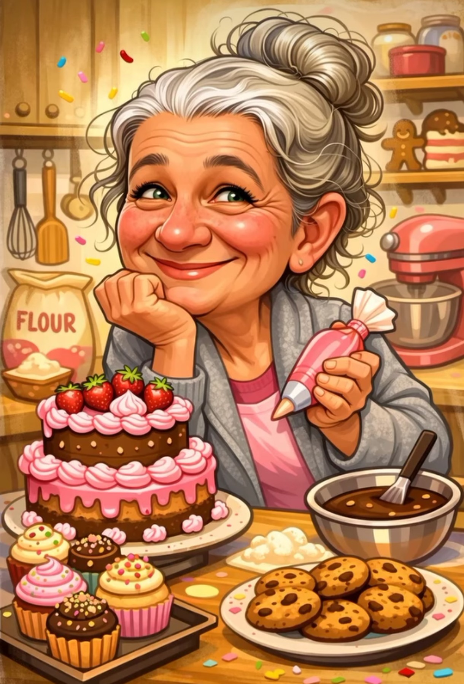

Há mais de 25 anos, Dona Lúcia transforma amor em sabor. Tudo começou nas festas juninas, quando ela levava seus bolos caseiros para vender. O sucesso foi tanto que, com o tempo, isso se tornou uma tradição no bairro do Taboão, em Diadema.
Hoje, Dona Lúcia e sua equipe têm uma loja sempre com cheirinho de bolo saindo do forno. Ao lado da nora Máh, que trouxe um toque moderno com os bolos personalizados, doces e salgados, a marca cresceu sem perder a essência: carinho em cada receita.
E quem é da região sabe: ninguém esquece o famoso bolo com cerquinhas de chocolate que marcou tantas comemorações.
Aqui, tradição, amor e sabor caminham juntos — criando memórias e atravessando gerações.
Dona Lúcia começou a fazer bolos para ajudar no orçamento da família. Casada, mãe de quatro filhos, ela encontrou na cozinha uma forma de cuidar da casa e, sem perceber, de espalhar carinho pelo bairro inteiro.
Foi com a ajuda do pai (que hoje já não está mais aqui) que nasceu a receita da massa de chocolate. Ela já fazia pão de ló, mas sonhava com uma massa de chocolate igualmente leve, fofinha e macia. Entre tentativas, conselhos e muito amor envolvido, a receita foi ganhando forma.
Sempre curiosa e dedicada, Dona Lúcia passava horas aprendendo com programas como “Programa da Ana Maria Braga” e “Mulheres”, adaptando dicas da chef Isamara Amâncio e de outros confeiteiros, até criar o seu próprio jeito de fazer bolo: simples, caprichado e com sabor de casa.
Foi assim que surgiu o bolo trufado de chocolate, que se tornou o campeão de vendas e a verdadeira identidade da Dona Lúcia. Quem é da região conhece: aquele bolo com a famosa cerquinha de chocolate e recheio generoso, feito para celebrar momentos e criar memórias.

Com experiência em vendas e, na época, desempregada, Máh recebeu uma proposta para ajudar na produção. No começo, sem nenhuma experiência com confeitaria, começou dando apoio na produção dos salgadinhos. Com a orientação da cunhada Kelly, foi pegando o jeito das receitas, aprendendo na prática, errando, acertando e se apaixonando pelo processo.
Quando a cunhada saiu, os bolos personalizados precisavam continuar — e foi aí que Máh arregaçou as mangas. Passou a assistir vídeos, buscar dicas, testar novas técnicas e, com muita dedicação, assumiu a continuidade dos bolos personalizados.
Com o tempo, trouxe um toque moderno para a marca, ampliando o portfólio para doces e docinhos personalizados. Hoje, Máh representa essa nova fase: inovação, criatividade e cuidado em cada detalhe, sem nunca perder a essência de carinho que a Dona Lúcia construiu desde o começo.
📍 Rua Jurua, 220 - Diadema - SP